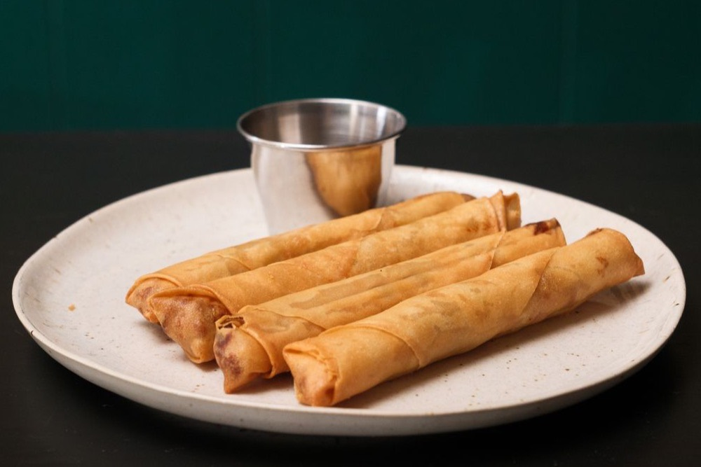

Lumpiang Shanghai (Filipino Spring Rolls)
Crispy, golden pork rolls — the star of every Filipino party table

Lumpiang Shanghai are the thin, crispy pork spring rolls that disappear first at any Filipino gathering. The filling is simple and the rolling is the only skill involved — tight, thin rolls fry up shatteringly crisp. Make a big batch; they freeze beautifully before frying.
Ingredients
- 500 g ground pork
- 1 carrot, finely minced
- 1 small onion, finely minced
- 3 cloves garlic, minced
- 1 egg
- 2 tbsp soy sauce
- 1 tsp salt
- 1/2 tsp ground black pepper
- 25 to 30 lumpia wrappers
- Oil, for deep-frying
- Sweet chili sauce or spiced vinegar, to serve
Instructions
- In a bowl, combine the ground pork, carrot, onion, garlic, egg, soy sauce, salt, and pepper. Mix well.
- Place about 1 tablespoon of filling near one edge of a wrapper. Roll tightly into a thin log, folding in the sides, and seal the edge with a dab of water.
- Repeat until all the filling is used. For even cooking, keep the rolls thin and uniform.
- Heat oil to medium (about 170°C/340°F). Fry the rolls in batches until golden brown and cooked through, 4 to 5 minutes.
- Drain on a rack or paper towels. Cut in half and serve hot with sweet chili sauce or spiced vinegar.
Cook's tip: Fry one test roll first to check your seasoning and heat — the oil should be hot enough to crisp the wrapper but not so hot the pork stays raw. Uncooked rolls freeze well; fry straight from frozen, adding a minute or two.
Curious which Filipino dish matches your personality? Take the Pinoy Food Personality Test or browse the full Filipino Food Guide.